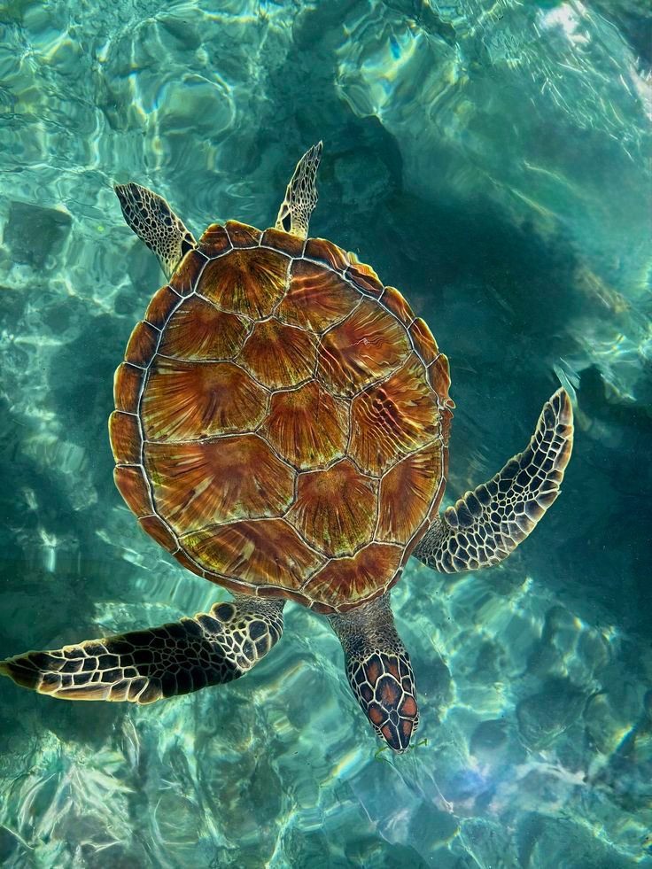

Educação ambiental, preservação marinha e conscientização através da conservação das tartarugas marinhas.
Conheça o projeto
O MARTUGA PE é uma iniciativa voltada à preservação das tartarugas marinhas através da educação ambiental, conscientização social e ações de conservação em Pernambuco.
O projeto busca aproximar a população da importância da vida marinha e fortalecer o cuidado com os oceanos, praias e ecossistemas costeiros.
Conheça nossas açõesProjetos educativos e conscientização sobre a preservação da vida marinha.
Apoio à preservação das tartarugas marinhas durante períodos reprodutivos.
Incentivo à participação social e ao cuidado com o meio ambiente.
Educação ambiental e conservação marinha em Pernambuco.
Faça parte da preservação das tartarugas marinhas e ajude nossas ações ambientais.